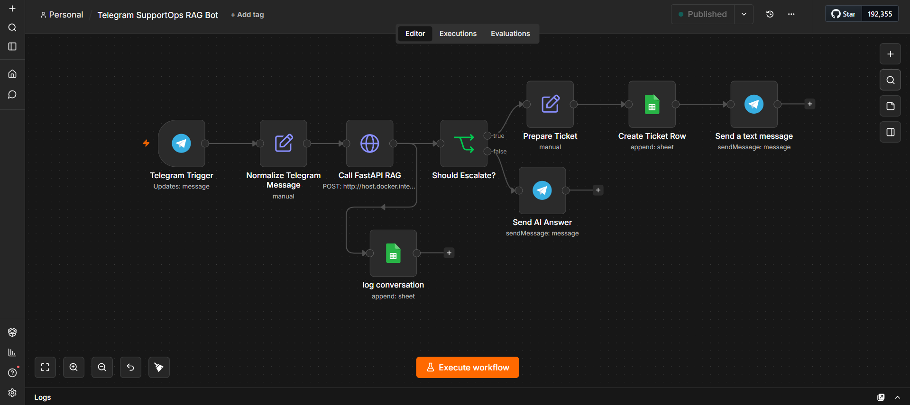

01
RAG · Automation · Backend
SupportOps AI Agent
A knowledge-grounded operations workflow that receives Telegram messages, retrieves controlled context from ChromaDB, generates an answer through OpenRouter, and routes low-confidence or policy-sensitive cases to a tracked escalation path.
- Orchestrated Telegram, n8n, FastAPI, ChromaDB, OpenRouter, and Google Sheets.
- Added confidence scoring, category and urgency classification, ticket IDs, and escalation rules.
- Included API tests, workflow templates, screenshots, setup documentation, and explicit production limitations.